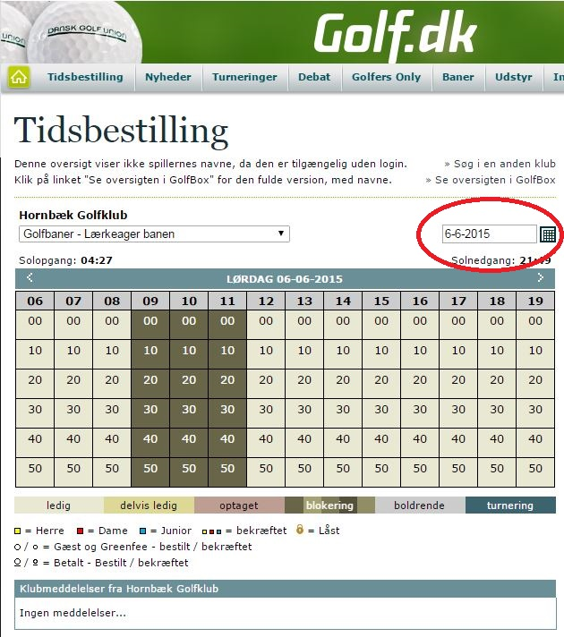

<div class="pages">
  <div data-page="aktivitetskalender" class="page navbar-fixed toolbar-fixed" >
    <div class="navbar">
      <div class="navbar-inner">
        <div class="left">
          <a href="#" class="link back icon-only"><i class="icon icon-back"></i></a>
          <!-- <a href="#" class="back link icon-only"><i class="icon icon-back"></i></a> -->
        </div>
        <div class="center">Aktivitetskalender</div>
        <!-- <div class="right"></div> -->
        <div class="right">
        </div>
      </div>
    </div>
    <div class="page-content" style="padding-top:45px;">
       <div class="content-block">
          <p>Lærkeager - Aktivitetskalender</p>
          
          <p>Da Lærkeager banen kan bookes til turneringer, firmaarrangementer og lign., er det en god ide at tjekke aktivitetskalenderen inden I dukker op, så I ikke kører forgæves. Kalenderen kan findes under nedenstående link.</p>
          <p><a href="http://www.golf.dk/booking/grid/33496e9f-008a-4816-befc-92c139120e9f/20150731/2D846855-9056-4EBA-B0E4-FDB10B50C780">Lærkeager - Aktivitetskalender.</a></p>
          <p>Husk at skifte dato til den dag I gerne vil spille.</p>
          <p>Vær opmærksom på at Lærkeager er lukket hver tirsdag mellem 16:30 og 19:30 på grund af Begyndermatch - Match 55+.</p>
        </div>
    </div>
    </div>
    </div>
  </div>
</div>
